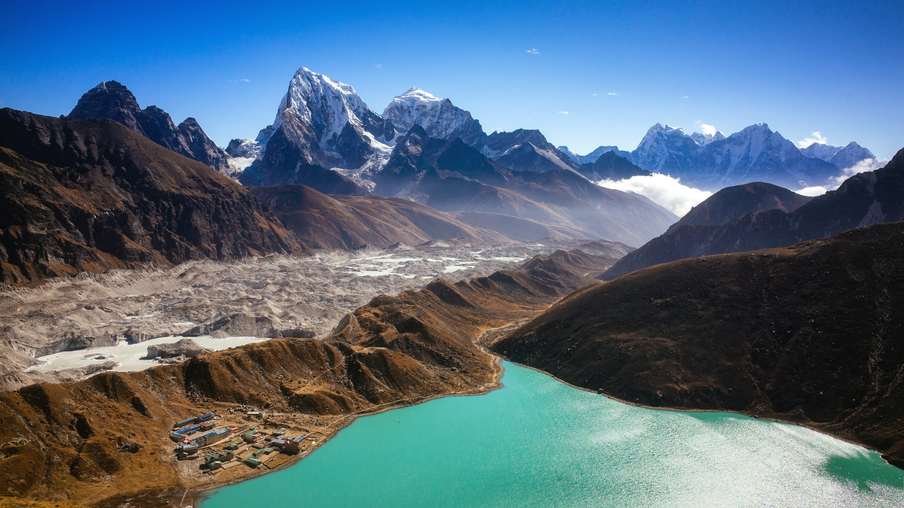

- Himalayan Majesty: Nepal is home to eight of the world's 14 highest peaks, including
Mount Everest, the highest point on Earth. The Himalayas offer breathtaking
landscapes and trekking opportunities for adventure enthusiasts.

- Trekking and Hiking: Nepal is a trekker's paradise with a variety of trails catering to different
skill levels. The Annapurna Circuit, Everest Base Camp trek, and Langtang Valley trek are
among the most popular routes.
- Rich Cultural Heritage: Explore ancient cities, temples, and monasteries in places like
Kathmandu, Bhaktapur, and Patan. The architecture and art reflect the country's diverse cultural
and religious history.
- Warm Hospitality: Nepalese people are known for their warmth and hospitality. Visitors often feel
a strong sense of welcome and friendliness in the local communities.
- Breathtaking Scenery: From the lush valleys and terraced fields to the snow-capped peaks of the
Himalayas, Nepal offers a diverse range of stunning landscapes that will leave you in awe.
- Unique Wildlife: The country is home to diverse wildlife, including Bengal tigers,
one-horned rhinoceroses, red pandas, and a variety of bird species. Chitwan National Park
and Bardia National Park are popular for wildlife safaris.
- Spiritual Retreat: Nepal is a deeply spiritual country with a blend of Hinduism and Buddhism.
Visit sacred sites like Pashupatinath, Boudhanath, and Lumbini (the birthplace of Buddha) for a
spiritual and serene experience.
- Adventure Sports: Besides trekking, Nepal offers a range of adventure activities such as
white-water rafting, paragliding, zip-lining, and mountain biking, making it a haven for
thrill-seekers.
- Cultural Festivals: Experience vibrant and colorful festivals throughout the year, such as Dashain,
Tihar, and Holi. These celebrations provide a unique insight into Nepalese culture and traditions.
- Local Cuisine: Enjoy the diverse and flavorful Nepalese cuisine, which includes momos (dumplings),
dal bhat (lentil soup with rice), and a variety of curries. Don't forget to try the local tea,
called chiya.
- Cultural Diversity: Despite its small size, Nepal is incredibly diverse in terms of culture,
language, and ethnicity. You can encounter a wide range of traditions and lifestyles as you travel
through different regions.
- Affordable Travel: Nepal is known for being a budget-friendly destination, making it accessible
to a wide range of travelers. Accommodation, food, and transportation are generally more affordable
compared to many other tourist destinations.
- Enchanting Villages: Venture into the remote villages of Nepal, where time seems to stand still and
traditional lifestyles prevail. Experience the warm hospitality of the locals, immerse yourself in their
unique customs, and savor the authentic flavors of their cuisine.
Enchanting Villages in Nepal
- Yoga and Meditation Retreats: Nepal is a great place to go for yoga and meditation retreats.
There are many different centers and retreats to choose from, and you can find one that is perfect
for your needs and interests.
- Art and Handicraft Galleries: Kathmandu is home to numerous art galleries and studios showcasing
traditional and contemporary Nepalese art. Explore these spaces to appreciate the country's artistic
expressions.